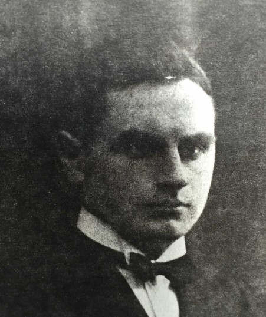
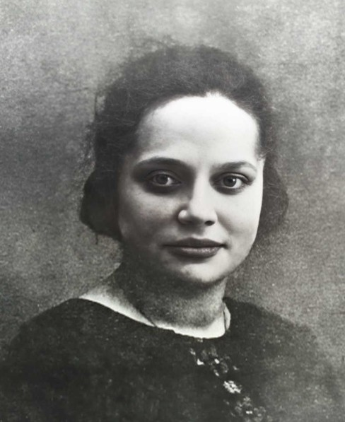
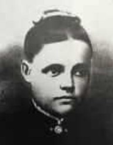

Född 28 nov 1927 i Ullebro, Drothem (E) 1 .
Död 1 sep 2016 i Victoria, British Columbia, Kanada 2 .

F Albin Edvard Aronsson.Född 3 dec 1900 i Fyrby, Tåby (E) 3 .
Död 18 mar 1973 i Enilda, Peace River, Alberta, Kanada 4 .

M Gertrud Sofia Aronsson f Pettersson.Född 30 mar 1906 i Udden, Bogsten, Drothem (E) 5 .
Död .. mar 1996 i High Prairie, Alberta, Kanada 2 .
Född 4 aug 1868 i Isdalen, Tomtaholm, Drothem (E) 6 .
Död 22 feb 1918 i Udden, Bogsten, Drothem (E) 7 .

MM Anna Charlotta Karlsdotter.Född 1 okt 1870 i Nystugan, Kalerum, Gryt (E) 8 .
Död 22 maj 1945 i Udden, Bogsten, Drothem (E) 7 .
MMF Karl Peter Karlsson.

Född 27 feb 1837 i Käggla/Kägglö, Tryserum (E) 9 .
Död 23 feb 1904 i Hästhagen, Spolstad, Gårdeby (E) 10 .
MMM Anna Sofia Svensdotter.
Född 21 apr 1848 i Björklund, Rullerum, Ringarum (E) 11 .
Död 8 jul 1932 i Hagsätter, Halleby, Skärkind (E) 12 .